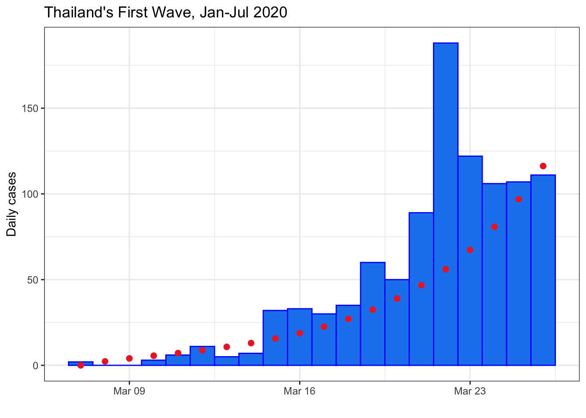
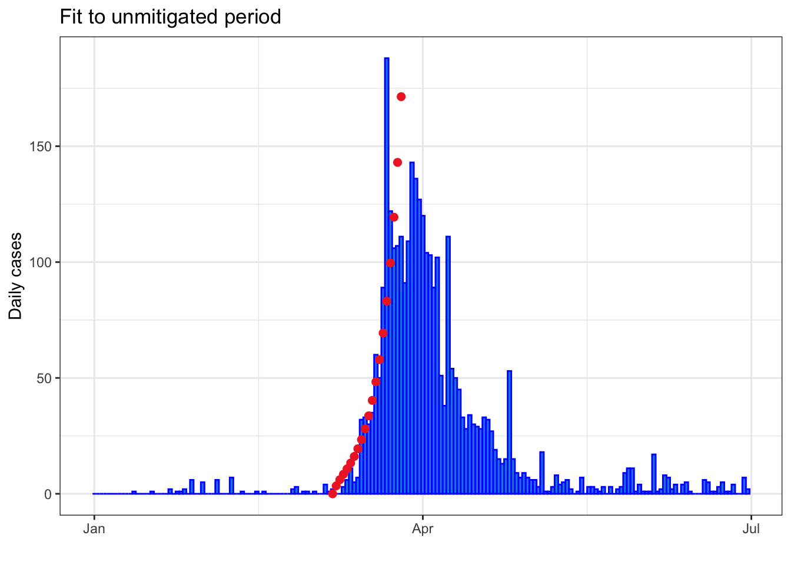
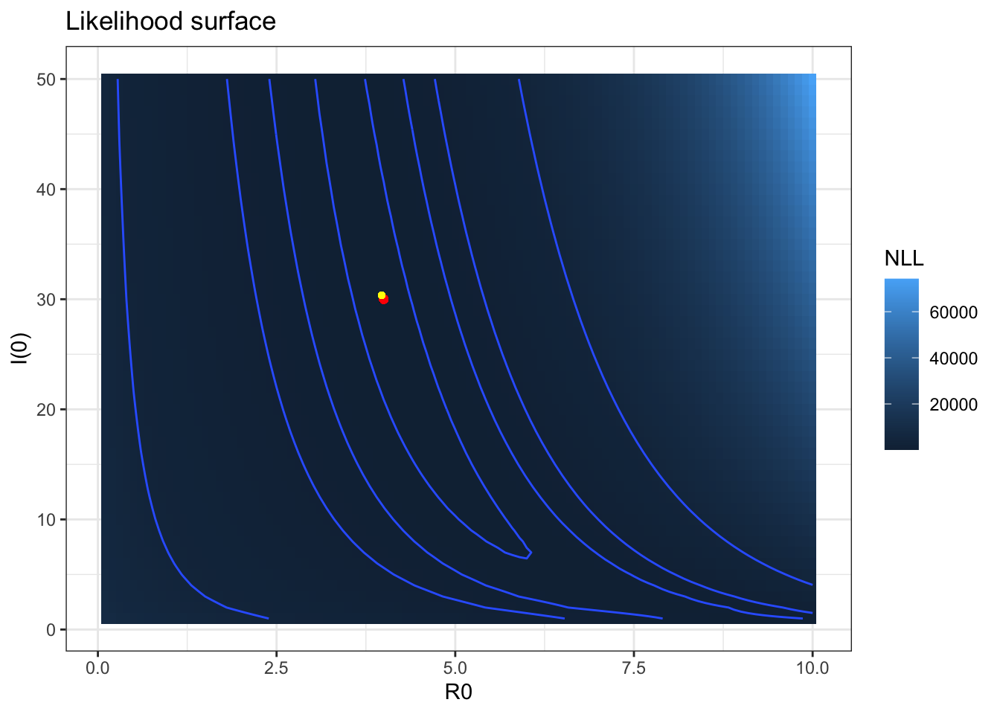
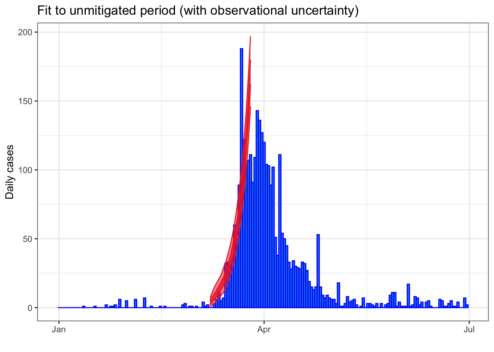

COVID-19 Modelling in R
Summary
A combination of theory and practice to extend the concepts of maximum likelihood and other model fitting methodologies to the context of transmission dynamic models.
This session is divided into four parts:
Part 1: Thinking about parameter fitting - how to measure fit and how to find the best fit
Part 2: Apply measures of distance to our data: least squares and maximum likelihood
Part 3: Parameter estimation techniques with maximum likelihood
Part 4: Confidence intervals derived from likelihood methods
Model fitting
The first exercise in this session is to fit a model “by eye”. We hope that by the end of the exercise you will be thinking to yourself “there must be an easier and more robust way to do this”. This of course motivates the rest of the session. First open Shiny application Least_Squares_App.Rmd. (App can be accessed online at https://moru.shinyapps.io/Least_Squares_App/). In this application the dots represent the data and the line represents predicted values based on a mathematical model (in this case a simple cubic equation). This application allows you to explore how changing model parameters changes SSQ (sum of squares of residuals). It is intended to give you an intuitive feel for how a model fitting approach that aims to minimize the SSQs works.
Try to find the best fitting line by adjusting the three parameters with the sliders. Check your answer with the application.
Questions
What are the residuals? What disadvantages might there be of fitting models by hand like this? Can you think of a simple algorithm for searching over all the parameters and finding those that give the best fitting model? In the example we have been minimizing the sum of squares of the residuals. What would be the effect if we decided to minimize the sums of the absolute values of the residuals? Would you expect to get the same answer?Distance Functions
In part 2 we consider different ways of measuring how far our model results are from the data. We use the model developed in the last session and the initial data in March 2020. We are going to briefly touch on sum of squares and then use likelihood functions to assess model fit to data.
In this practical we are going to estimate some of the parameters of our base SEIR COVID-19 model by fitting it to our incidence data. What are the free parameters of our base model?
In this exercise let us assume a known latent period and infectious period and use the basic reproduction number, \(R_0\), and the initial size of the infected population, \(I(t=0)\), as the free parameters we will calibrate using our data.
To begin, create a new R script, save the file as fitting_models.R into your working directory, and copy the code chunk below:
# SPARK Modelling Short course
#########################
## FITTING MODELS IN R ##
#########################
library(dplyr)
Attaching package: 'dplyr'The following objects are masked from 'package:stats':
filter, lagThe following objects are masked from 'package:base':
intersect, setdiff, setequal, unionlibrary(deSolve)
library(ggplot2)Filtering the data
When calibrating each of these parameters, one thing we must be careful of is to account for the introduction of various interventions as these will likely have a significant impact on the parameter values (the reproduction number in particular). Therefore, in the code provided below I first isolate the “pre-intervention” era (which we defined in the last session as the first wave betweeen 7th and 26th March 2020. We will use this truncated dataset to estimate the parameters, \(R_0\) and initial_infected_population. The code below should let you view the data we are using to fit the model.
# Data imports and filtering
first_wave <- read.csv("first_wave_TH.csv", colClasses = c("Date", "numeric", "numeric"))
# fixing the format of date
first_wave$Date <- as.Date(first_wave$Date, format = "%Y-%m-%d")
# Time window
start_date <- as.Date("2020-03-07")
end_date <- as.Date("2020-03-26")
# Filter data to capture period prior to interventions. This has already been done in the last session.
uncontrolled_period <- first_wave %>%
filter(Date >= start_date, Date <= end_date)
# Plot the filtered data
ggplot(uncontrolled_period) +
geom_col(aes(x = Date, y = Cases), width = 1, fill = "dodgerblue2", colour = "blue") +
ylab("Daily cases") +
xlab("") +
ggtitle("Uncontrolled first wave of COVID-19 in Thailand 1st to 24th March, 2020") +
theme_bw()
We’ll re-use the functions from the last session
## Define model as per the previous session
# Time window
times <- seq(start_date, end_date, by = 1)
# Model parameters
parameters <- c(
R0 = 4,
incubation_period = 5,
infectious_period = 6
)
# Initial conditions
Total_population <- 6.6e7 # Population of Thailand
Initial_exposed <- 0
Initial_infectious <- 20 # Initial infectious seed
Initial_recovered <- 0
Initial_susceptible <- Total_population - Initial_exposed - Initial_infectious - Initial_recovered
# State variables
state <- c(
Susceptible = Initial_susceptible,
Exposed = Initial_exposed,
Infectious = Initial_infectious,
Recovered = Initial_recovered
)
# Model function
COVID.base <- function(t, state, parameters) {
with(as.list(c(state, parameters)), {
# Calculate the total population size
Total_population <- Susceptible + Exposed + Infectious + Recovered
# Calculate the average force of infection imposed on each susceptible individual
force_of_infection <- R0 * Infectious / (Total_population * infectious_period)
# Calculate the net (instantaneous) change in each state variable
Susceptible_change <- -force_of_infection * Susceptible
Exposed_change <- force_of_infection * Susceptible - Exposed / incubation_period
Infectious_change <- Exposed / incubation_period - Infectious / infectious_period
Recovered_change <- Infectious / infectious_period
# Return net changes as list
return(list(
c(
Susceptible_change,
Exposed_change,
Infectious_change,
Recovered_change
)
))
})
}
solve.base.model <- function(y_ = state,
times_ = times,
func. = COVID.base,
parms_ = parameters) {
out <- ode(
y = y_,
times = as.numeric(times_ - times_[1]),
func = func.,
parms = parms_
)
# Calculate the prevalence, incidence and cumulative incidence (for comparison with data)
out <- as.data.frame(out) %>%
mutate(
Prevalence = Exposed + Infectious,
Incidence = Exposed / parms_["incubation_period"],
Cumulative_incidence = cumsum(Incidence) + Incidence[1],
Population = Susceptible + Exposed + Infectious + Recovered,
Date = times_
)
return(out)
}Solving the model for a specific set of parameters
Now we use the model developed in the last session and solve the model for an initial set of parameters, an initial state and using dates from 7th - 26th March, 2020
# now we use the model developed in the last session and solve it
# for an initial set of parameters, an initial state and using times
# from just 7th - 26th of March 2020
out_init <- solve.base.model(
y_ = state,
times_ = times,
func. = COVID.base,
parms_ = parameters
)
# Plot the filtered data and the first model "guess"
ggplot(uncontrolled_period) +
geom_col(aes(x = Date, y = Cases), width = 1, fill = "dodgerblue2", colour = "blue") +
geom_point(data = out_init, aes(x = Date, y = Incidence), size = 2, colour = "firebrick2") +
ylab("Daily cases") +
xlab("") +
ggtitle("Thailand's First Wave, Jan-Jul 2020") +
theme_bw()
Calculating “distance” between the model and data
We can use the model output, stored in out_init to assess model fit. We can use sum of squares of the difference between the data and the model.
# find the sum of the residuals squared for day 2 until day 24
SSQ_initial <- sum((uncontrolled_period$Cases[-1] - out_init$Incidence[-1])^2)
SSQ_initial[1] 24516.09Alternatively, we can use the output from our last function call to calculate the likelihood of our observed data given our COVID model (which of course is specific to the current parameter values that we have used). To do this, a common practice is to assume that the observed daily incidence (stored in the dataframe uncontrolled_period) is a Poisson-distributed random variable with mean given by our model-predicted incidence (stored in the dataframe out_init). Under this model the (log-)likelihood of each daily observation can be calculated using the dpois() function; and the total (log-)likelihood for all of the observations is simply the sum of all these:
# Calculate the negative log-likelihood for our initial parameter values, assuming a Poisson residual distribution
poisson_negative_log_likelihood_initial <- -sum(dpois(uncontrolled_period$Cases[-1],
out_init$Incidence[-1],
log = TRUE
))
poisson_negative_log_likelihood_initial[1] 212.8381Th ere are many possible distributions that can be used to develop some measure of distance between the data and the model expectation. You may wish to investigate some of the density distributions available in R, which you can do by typing ?distributions in your console.
Another distribution, which allows us to account for high variability in the data is the negative binomial distribution. We could use the output from our last function call to calculate the likelihood of our observed data given our COVID model using dnbinom() function in much the same way as the Poisson distribution. Those with a particular interest in statistics and probability distributions may wish to experiment and to consider the pros and cons of different choices. For the remainder of this exercise, however, we will continue with the Poisson distribution which has the attribute of having only one parameter to estimate, the mean.
Transforming the parameters
Before launching into a likelihood-based search across all parameter space for the values of \(R_0\) and \(I(t=0)\) that minimize our negative log-likelihood (which is equivalent to maximizing the positive log-likelihood), it would behoove us to pause and plan our search carefully. We will use the optim() function to minimize the log-likelihood, but we should be cogniscent of the fact that this function searches over all conceivable values of the parameters (i.e., from \(-\infty\) to \(\infty\))).
What are the feasible ranges of values for our two parameters: \(R_0\) and \(I(t=0)\)?With this in mind, it would be sensible to restrict our search to only those values of parameters that are feasible. Not only should this increase the speed of the algorithm (hopefully leading to the desired answer more quickly) but may also help us avoid any computational errors that might arise which will kill our search prematurely (for instance, dpois() and dnbinom() may have a difficult time calculating the probability density for negative observations!). For this purpose, we introduce a set of transformed parameters, that is parameters that exist in the full interval \(-\infty\) to \(\infty\), but can be mapped back to our feasible regions for our parameters.
# transform the parameters
# The search / optimization algorithm we employ searches over
# the range (-Inf, Inf) for each variable. In our application
# we are only interested in solutions in the range (0, Inf)
# for R0 and I(0). Therefore, it
# would be a good idea to apply a transformation to our
# search space so that we are not wasting time exploring
# infeasible regions of parameter space.
initial_transformed_parameters <- log(c(
"R0" = 4,
"Initial_infectious" = 20
))So now we are equipped to fit our first maximum likelihood optimisation, using code like below:
#### Fitting routine ####
# We have selected R0 and I(0) as our free parameters
# We need a function that accepts R0 and I(0) as arguments,
# solves the model using these inputs, and calculates the
# negative log-likelihood of the data given these parameters
negative_log_likelihood <- function(transformed_parameters,
data = uncontrolled_period$Cases[-1],
state_base = state,
times_ = times,
func. = COVID.base,
parms_base = parameters) {
# Untransform parameters
R0 <- exp(transformed_parameters["R0"])
Initial_infectious <- exp(transformed_parameters["Initial_infectious"])
# Calculate updated susceptible population
Initial_susceptible <- state_base["Susceptible"] + state_base["Infectious"] - Initial_infectious
# Overwrite baseline parameters with proposed parameters
parms_base["R0"] <- R0
state_base["Susceptible"] <- Initial_susceptible
state_base["Infectious"] <- Initial_infectious
# Solve model with updated parameters
out <- solve.base.model(
state_base,
times_,
func.,
parms_base
)
return(-sum(dpois(
x = data,
lambda = out$Incidence[-1],
log = TRUE
)))
}We can check it works as intended:
poisson_negative_log_likelihood_initial_from_function <- negative_log_likelihood(initial_transformed_parameters)
poisson_negative_log_likelihood_initial_from_function[1] 212.8381poisson_negative_log_likelihood_initial[1] 212.8381Parameter estimation with maximum likelihood
With our likelihood function now set up, we can use the optim function to determine the optimal parameters, that is the parameter values that minimize the negative log-likelihood.
We will use the Nelder-Mead search algorithm. This is a search algorithm that allows rapid exploration of the parameter space for the optimal parameters.
#### Optimal parameters ####
# Use the optim function to determine the parameters that
# minimize the negative log-likelihood (i.e., maximize
# the likelihood)
# We will use the Nelder-Mead optimization solver
optim_NM <- optim(
par = initial_transformed_parameters,
fn = negative_log_likelihood,
control = list(maxit = 500),
method = "Nelder-Mead",
hessian = TRUE
)Once the search is complete, inspect the solution:
# Check for convergence (always code 0 for NM)
optim_NM$convergence # 0 - converged; 1 - failed to converge[1] 0# Inspect solution
optim_NM$par R0 Initial_infectious
1.378931 3.413004 The results are a little surprising. However, remember that our search was conducted with reference to the transformed parameters; in order to retrieve the true optimal parameter values we must invert the transformation:
# Back-transform parameters
optimum_parameters <- exp(optim_NM$par)
optimum_parameters R0 Initial_infectious
3.970654 30.356305 But have we improved our likelihood from the initial guess we had?
# Inspect the optimal negative log-likelihood
optimum_NLL <- optim_NM$value
optimum_NLL[1] 144.8615poisson_negative_log_likelihood_initial)?
Satisfied that we have found the optimal solution, let’s now solve the model using these parameter values and compare the solution with our observed data:
#### Optimal model solution ####
# Create the optimal parameter and state vectors
optimal_parameters <- parameters
optimal_parameters["R0"] <- optimum_parameters["R0"]
optimal_initial_state <- state
optimal_initial_state["Susceptible"] <- state["Susceptible"] + state["Infectious"] - optimum_parameters["Initial_infectious"]
optimal_initial_state["Infectious"] <- optimum_parameters["Initial_infectious"]
# Solve the model given the optimal parameters and initial conditions
optimal_solution <- solve.base.model(
y_ = optimal_initial_state,
times_ = times,
func. = COVID.base,
parms = optimal_parameters
)
# Plot the optimal solution
ggplot(first_wave) +
geom_col(aes(x = Date, y = Cases), width = 1, fill = "dodgerblue2", colour = "blue") +
geom_point(data = optimal_solution, aes(x = Date, y = Incidence), size = 2, colour = "firebrick2") +
ylab("Daily cases") +
xlab("") +
ggtitle("Fit to unmitigated period") +
theme_bw()
Bonus code: copy and paste this code to perform a grid search -getting the negative log likelihood across a sequence of each parameter value.
# Specify search grid
R0_vec <- seq(from = 0.1, to = 10, by = 0.1)
initial_infectious_vec <- seq(from = 1, to = 50, by = 1)
# the function that will perform grid search
nll.grid <- function(R0_vec, initial_infectious_vec) {
parameter_grid <- expand.grid(
R0 = R0_vec,
initial_infectious = initial_infectious_vec
)
nll <- data.frame(matrix(nrow = nrow(parameter_grid), ncol = 1))
colnames(nll) <- "NLL"
for (row_of_params in seq(1, dim(parameter_grid)[1])) {
transformed_params <- log(c(
"R0" = parameter_grid[row_of_params, 1],
"Initial_infectious" = parameter_grid[row_of_params, 2]
))
nll[row_of_params, ] <- negative_log_likelihood(transformed_params)
}
return(data.frame(
Reproduction_number = parameter_grid["R0"],
Initial_infectious = parameter_grid["initial_infectious"],
nll
))
}
# call the function that will calculate likelihood surface
nll_grid_results <- nll.grid(R0_vec, initial_infectious_vec)
# Plot likelihood surface
nll_plot <- nll_grid_results %>%
ggplot2::ggplot(aes(
x = R0,
y = initial_infectious,
fill = NLL,
z = NLL
)) +
geom_tile() +
geom_contour(breaks = c(100, 110, 120, 130, 200, 500, 1000, 4000)) +
ylab("I(0)") +
xlab("R0") +
ggtitle("Likelihood surface") +
theme_bw()
# Extract optimum from grid search
grid_optimum <- nll_grid_results[which.min(nll_grid_results$NLL), ]
grid_optimum R0 initial_infectious NLL
2940 4 30 144.9431# Superimpose optimum on likelihood surface plot
nll_plot <- nll_plot +
geom_point(aes(
x = grid_optimum$R0,
y = grid_optimum$initial_infectious
),
colour = "red",
)
# Superimpose optimal point to negative-log-likelihood plot
nll_plot <- nll_plot + geom_point(aes(
x = optimum_parameters["R0"],
y = optimum_parameters["Initial_infectious"]
),
colour = "yellow",
size = 1
)
print(nll_plot)Warning: The following aesthetics were dropped during statistical transformation: fill
ℹ This can happen when ggplot fails to infer the correct grouping structure in
the data.
ℹ Did you forget to specify a `group` aesthetic or to convert a numerical
variable into a factor?
Calculating confidence intervals
Firstly we are going to put some confidence intervals around the data. This is commonly done but has some problems that relate to model assumptions. For example, if we use the Poisson distribution for estimating parameters, it assumes the spread of the data has a variance equal to the mean. The Negative Binomial distribution allows for greater data variance, but we have one extra parameter to estimate -the variance of the negative binomial distribution itself. Below is some code to examine the confidence intervals around your data with the caveats given above.
Firstly, calculate the Poisson distribution centred on the optimised model solution. Find the inter-quartile range and 95% confidence interval of this distribution.
# Calculate the observational confidence intervals
optimal_solution <- optimal_solution %>%
mutate(
lower50 = qpois(p = 0.25, lambda = Incidence), # 50% confidence interval (i.e., 25 - 75th centiles)
upper50 = qpois(p = 0.75, lambda = Incidence),
lower95 = qpois(p = 0.025, lambda = Incidence), # 95% confidence interval (i.e., 2.5 - 97.5th centiles)
upper95 = qpois(p = 0.975, lambda = Incidence)
)
# Plot confidence intervals as ribbons around the central estimates
ggplot(first_wave) +
geom_col(aes(x = Date, y = Cases), width = 1.0, fill = "dodgerblue2", colour = "blue") +
geom_ribbon(data = optimal_solution[-1, ], aes(x = Date, ymin = lower50, ymax = upper50), fill = "firebrick2", colour = "firebrick2", alpha = 0.8) +
geom_ribbon(data = optimal_solution[-1, ], aes(x = Date, ymin = lower95, ymax = upper95), fill = "firebrick2", colour = "firebrick2", alpha = 0.5) +
ylab("Daily cases") +
xlab("") +
ggtitle("Fit to unmitigated period (with observational uncertainty)") +
theme_bw()
More important than confidence intervals around the data are confidence intervals around the estimated parameters. We found an optimum value for the estimated parameters using the R inbuilt optim function, but this function can do much more.
In addition to the point estimates for each of the parameters, we can also use the results of the optimization search to calculate confidence intervals for them too. The idea is to use the curvature of the likelihood surface to determine the range of parameter values that exceed a particular likelihood score (pointer likelihood surfaces should lead to more smaller confidence intervals). The curvature values are stored in what is known as the Hessian matrix:
optim_NM$hessian R0 Initial_infectious
R0 10561.786 3159.1981
Initial_infectious 3159.198 994.9545The covariance matrix is the inverse of this matrix, and be calculated using:
# Covariance matrix
covar_matrix <- solve(optim_NM$hessian)
covar_matrix R0 Initial_infectious
R0 0.001884512 -0.005983737
Initial_infectious -0.005983737 0.020004746Using the covariance matrix, we can next calculate the standard errors for each parameter by taking the square root of the diagonal elements of the covariance matrix, and then adding and subtracting these to the central estimates to obtain the 95% confidence intervals:
# Now use the covariance matrix to generate standard errors for each parameter
std_errors <- sqrt(diag(covar_matrix))
estimates_transformed <- data.frame(
estimate = optim_NM$par,
std_error = std_errors
) %>%
mutate(
lower95CI = estimate - 1.96 * std_error,
upper95CI = estimate + 1.96 * std_error
)
estimates_transformed estimate std_error lower95CI upper95CI
R0 1.378931 0.04341097 1.293845 1.464016
Initial_infectious 3.413004 0.14143813 3.135785 3.690223# Back-transform estimates and confidence intervals
estimates <- exp(estimates_transformed[, -2])
estimates estimate lower95CI upper95CI
R0 3.970654 3.646783 4.323288
Initial_infectious 30.356305 23.006700 40.053777